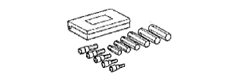

シリンダヘツドASSY 準備品 【オーバーホール（脱着·分解）】
 | 09201-10000 | バルブガイドブシュリムーバ ＆ リプレーサーセット |
 | (09201-01050) | バルブガイドブシュリムーバー ＆ リプレーサー ５ |
| 09201-41020 | バルブステムオイルシール リプレーサー | |
| 09202-70020 | バルブスプリングコンプレッサー | |
| (09202-00010) | アタッチメント | |
 | 09950-70010 | ハンドルセット |
 | (09951-07100) | ハンドル 100 |
|  | 09040-00010 | ヘキサゴンレンチセット |
 | (09043-20080) | ソケットヘキサゴンレンチ８ |
| トルクスソケットレンチ Ｅ５ | ||
| トルクスソケットレンチ Ｅ７ | ||
| プラスチックハンマー | ||
| ハンドリーマー | ||
| 3325-E8 | トルクスソケットレンチ （Ｅ８） (株)バンザイ扱い | |
| E8 | トルクスソケットレンチ （Ｅ８） (株)イヤサカ扱い | |
 | TB-524 | バルブシートカッターセット (株)バンザイ·(株)イヤサカ扱い |
| トルクレンチ ［3ー23N·m{30ー230kgf·cm}］ | ||
| トルクレンチ ［5ー45N·m {50ー460kgf·cm}］ | ||
| ノギス | ||
| マイクロメーター | ||
| Ｖブロック | ||
| ダイヤルゲージ | ||
| 分度器 | ||
| 直定規 | ||
| キャリパーゲージ | ||
| 直角定規 | ||
| プレスゲージ | ||
| シックネスゲージ |
| トヨタ純正 エンジンオイル | ||
| ペイント | ||
| 光明丹 | ||
| 染色浸透性探傷剤 （レッドチェック） | ||
| コンパウンド（極細目ー細目） | ||
| アドヘシブ1324 V93500114 (株)タクティー扱い |